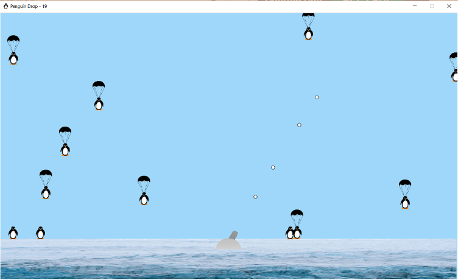

I am a class of 2019 undergraduate graduate at the Massachusetts Institute of Technology (MIT) in Cambridge, MA with a major in physics and a minor in computer science. I will be beginning my PhD in Fall 2020. I am currently working at QC Ware, Corp. researching near-term quantum algorithms.
joe.iosue@yahoo.com
joe.iosue@qcware.com
| Physics II: Electricity and Magnetism |
|---|
| I was a teaching assistant for 8.02 responsible for tutoring and helping twenty students through problems and concepts and grading their assignments. I was referred to as “best TA ever” by several students in anonymous subject evaluations. |
Coursework*
| Freshman Year |
|---|
|
5.111: Principles of Chemical Science. 6.0001: Introduction to CS Programming in Python. 6.0002: Computational Thinking and Data Science. 7.012: Introductory Biology. 8.01: Physics I - Classical Mechanics. 8.022: Physics II - Electricity and Magnetism. 18.02: Multivariable Calculus. 18.03: Differential Equations. |
| Sophomore Year |
|---|
|
6.009: Fundamentals of Programming. 6.042: Math for Computer Science. 8.03: Physics III - Waves and Harmonics. 8.033: Relativity. 8.04: Quantum Physics I. 8.044: Statistical Physics I. 8.223: Classical Mechanics II. 18.330: Introduction to Numerical Analysis. 18.700: Linear Algebra. |
| Junior Year |
|---|
| Not completed. |
| Senior Year |
|---|
| Not completed. |
*Required one HASS class per semester not listed.
Projects
This is not meant to be a comprehensive list
QUBOVert - GitHub

I created QUBOVert, a Python package for dealing with common binary optimization problems. It is particularly designed to aid in converting optimization problems to a form that can be solved with quantum annealers and quantum optimization algorithms. I also used it as a way to learn more about best software practices, such as continuous integration, code coverage, code quality, etc.
Numerical Steppers - GitHub
I provide a general overview of implicit versus explicit and single- versus multi-step steppers for numerically solving differential equations. I implemented dozens of methods in Julia which are included at the end of the paper (see the link). I explore several interesting systems, including geodesics around Schwarzschild and Kerr black holes, motion of a Kapitza pendulum, E cross B drift of a charged particle in perpendicular electric and magnetic fields, etc. See the report and code on the GitHub page.
Plot.py - GitHub
An extension of the python matplotlib module; reads from .plt file and plots the data. The purpose is to have all the formatting options given in the matplotlib module available to the user from the convenience of a text file.
PenguinDrop - GitHub
Use the arrow keys and spacebar to shoot down penguins and protect your iceberg. If too many penguins fall onto the ice, it will sink! I created both a desktop version in Python and an Android Application in Java.
Android App - App Page
Published Android application called "Distance to Green" on the Google Play store under the developer name "Eigenjoe" with monetized adds from AdMob. See the link for more information.
C++ Quantum Computer - GitHub
To learn about quantum computing, quantum algorithms, and C++, I coded a quantum computer simulator and implemented many quantum algorithms, such as Shor's factorization algorithm, Grover's search algorithm, etc.
Mathematica Notebooks - GitHub
Various Mathematica Notebooks showing cool physical phenomena.
RocketAce.py - GitHub

Use the arrow keys to control the acceration of a "rocket". The goal is to navigate around all the obstacles to go from START to END. Creating your own levels is easy; just follow the instructions in the help file and use the given levels as a template.
Publications
Probing ground-state phase transitions through quench dynamics (2019)
Phys. Rev. Lett. 123, 115701 arXiv:1809.06377
Abstract: The study of quantum phase transitions requires the preparation of a many-body system near its ground state, a challenging task for many experimental systems. The measurement of quench dynamics, on the other hand, is now a routine practice in most cold atom platforms. Here we show that quintessential ingredients of quantum phase transitions can be probed directly with quench dynamics in integrable and nearly integrable systems. As a paradigmatic example, we study global quench dynamics in a transverse-field Ising model with either short-range or long-range interactions. When the model is integrable, we discover a new dynamical critical point with a nonanalytic signature in the short-range correlators. The location of the dynamical critical point matches that of the quantum critical point and can be identified using a finite-time scaling method. We extend this scaling picture to systems near integrability and demonstrate the continued existence of a dynamical critical point detectable at prethermal timescales. We quantify the difference in the locations of the dynamical and quantum critical points away from (but near) integrability. Thus, we demonstrate that this method can be used to approximately locate the quantum critical point near integrability. The scaling method is also relevant to experiments with finite time and system size, and our predictions are testable in near-term experiments with trapped ions and Rydberg atoms.
A Jacobi Diagonalization and Anderson Acceleration Algorithm For Variational Quantum Algorithm Parameter Optimization (2019)
Abstract: The optimization of circuit parameters of variational quantum algorithms such as the variational quantum eigensolver (VQE) or the quantum approximate optimization algorithm (QAOA) is a key challenge for the practical deployment of near-term quantum computing algorithms. Here, we develop a hybrid quantum/classical optimization procedure inspired by the Jacobi diagonalization algorithm for classical eigendecomposition, and combined with Anderson acceleration. In the first stage, analytical tomography fittings are performed for a local cluster of circuit parameters via sampling of the observable objective function at quadrature points in the circuit angles. Classical optimization is used to determine the optimal circuit parameters within the cluster, with the other circuit parameters frozen. Different clusters of circuit parameters are then optimized in "sweeps,'' leading to a monotonically-convergent fixed-point procedure. In the second stage, the iterative history of the fixed-point Jacobi procedure is used to accelerate the convergence by applying Anderson acceleration/Pulay's direct inversion of the iterative subspace (DIIS). This Jacobi+Anderson method is numerically tested using a quantum circuit simulator (without noise) for a representative test case from the multistate, contracted variant of the variational quantum eigensolver (MC-VQE), and is found to be competitive with and often faster than Powell's method and L-BFGS.